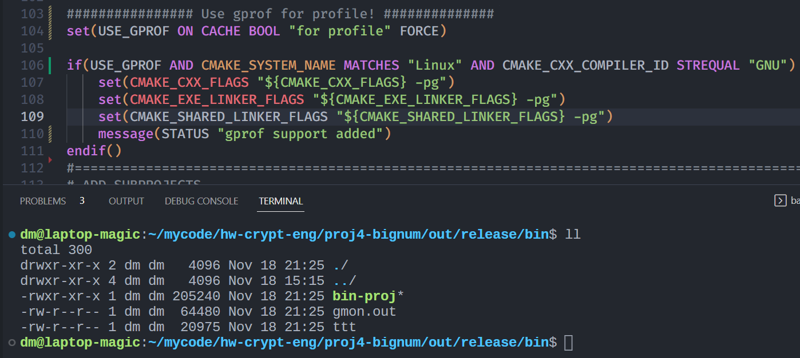
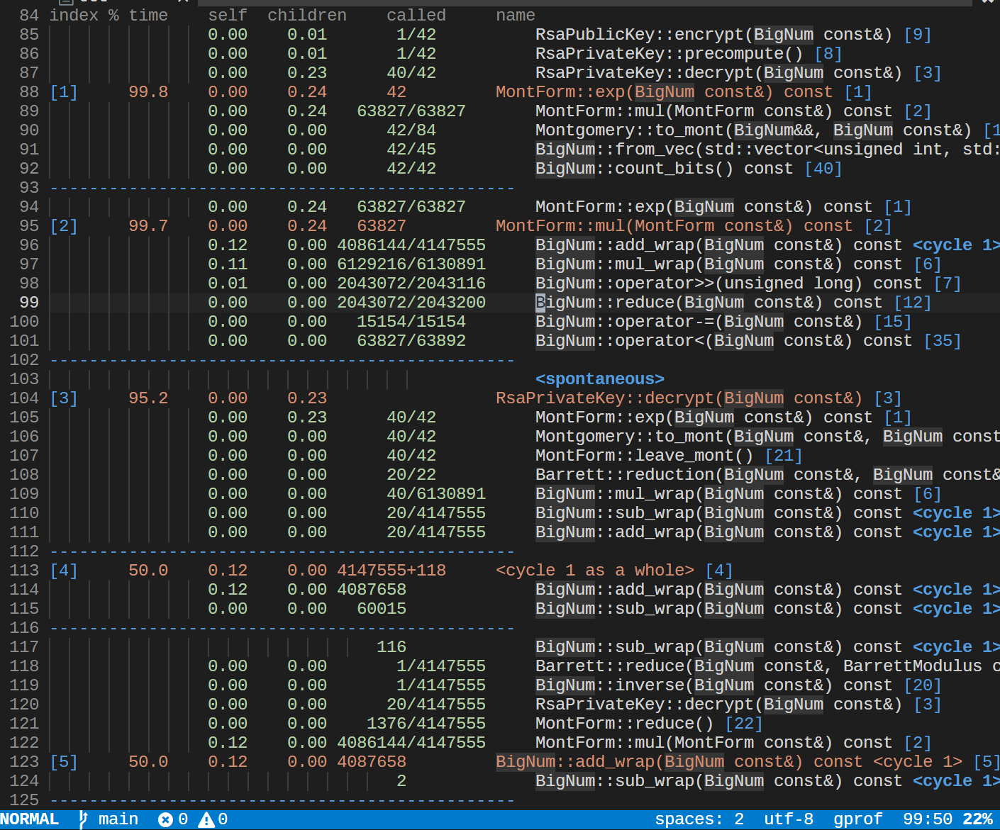

Profiler
性能分析工具用于定位程序性能的消耗点，方便做出细致的优化。 常见的 profile 工具有 Perf、 gprof 和 Valgrind 等。
gprof
gprof是一个用于Unix系统下 user-space code的性能分析工具。gprof适合于查找用户级程序的性能瓶颈，对于很多时间都在内核态执行的程序，gprof 不适合（syscalls, waiting for CPU or I/O waiting等不会被监控到）
使用方法：
- 在使用gcc(g++)编译时加上编译选项
-pg会生成插桩代码，用于收集函数调用数据。 - 在链接时加上链接选项
-pg会动态链接到preofiler库，在二进制运行时动态采样。 - 运行被插桩后的程序，会自动生成一个
gmon.out文件，保存采样数据信息。 - 使用工具
gprof(gcc toolchain中的一个工具)进行分析，会生成一个报告结果，由两部分组成： - the flat profile；对于每个函数，给出其执行时间占比，具体的执行时间，被调用次数等信息，排序后热点函数在最上方
- the call graph；对于每个函数，显示出其caller和callee
cmake集成
在项目顶层cmake中加入如下信息：
if(USE_GPROF AND CMAKE_SYSTEM_NAME MATCHES "Linux" AND CMAKE_CXX_COMPILER_ID STREQUAL "GNU")
set(CMAKE_CXX_FLAGS "${CMAKE_CXX_FLAGS} -pg")
set(CMAKE_EXE_LINKER_FLAGS "${CMAKE_EXE_LINKER_FLAGS} -pg")
set(CMAKE_SHARED_LINKER_FLAGS "${CMAKE_SHARED_LINKER_FLAGS} -pg")
message(STATUS "gprof support added")
endif()
这里不使用更细粒度的
target_*是因为如果一个项目由bin和lib两部分组成，而bin又依赖lib，仅对bin插桩，而不对lib插桩，会导致最终报告结果信息比较少；当然如果仅对某个二进制单独地profile，需要使用target_*if(USE_GPROF AND CMAKE_SYSTEM_NAME MATCHES "Linux" AND CMAKE_CXX_COMPILER_ID STREQUAL "GNU") target_compile_options(${PROJECT_NAME} PRIVATE -pg) target_link_options(${PROJECT_NAME} PRIVATE -pg) target_compile_definitions(${PROJECT_NAME} PRIVATE USE_GPROF) message(STATUS "gprof support added") endif()当然如果直接依赖已经编译好的库文件，无法对库进行插桩（显然的）；
build得到可执行文件bin-proj，使用gprof分析采样结果得到文字分析报告：
gprof bin-proj gmon.out > res

得到报告，其中的callgraph部分如下图所示：

gperftools
gperftools是google开源的profile工具。适用于Unix平台下的程序，在windows上工作很差。
使用方法：
-
安装
google-perftools -
程序链接动态库
-lprofiler（或者在第3步中加上环境变量LD_PRELOAD=/usr/lib/x86_64-linux-gnu/libprofiler.so） -
执行命令：
CPUPROFILE=main.prof CPUPROFILE_FREQUENCY=1000 ./bin-proj
- 查看分析结果：
google-pprof --svg bin-proj main.prof > res.svg # 生成svg矢量图，还支持--pdf --text 等格式
生成火焰图(flame graph)
依赖 brendangregg/FlameGraph: Stack trace visualizer (github.com)
google-pprof --collapsed bin-proj main.prof > main.0.cbt # 使用 --collapsed 输出生成flame graph所需要的信息
~/download/FlameGraph/flamegraph.pl main.0.cbt > main.flame.0.svg
cmake集成
cmake:gperftools性能分析工具find libprofiler 脚本暨profiler的静态连接问题_10km的博客-CSDN博客
船长的资料室 - gperftools一行不改，多链个库，程序提速40% (tiger2doudou.com)
gperftools没有提供官方的用于查找profiler库的cmake脚本，所以在基于cmake管理的项目中如果要在系统查找libprofiler库就就要自己写FindPROFILER.cmake脚本。
大体上来说，首先通过find_package（依赖第三方脚本来寻找），或者简单的自己写一下find_library等，确认一下libprofiler.so的存在路径，然后链接上自己的程序即可；如果需要对特定的代码片段做profile，需要google-perftools-dev（Ubuntu上的名称），在程序中引入#include <gperftools/profiler.h>，把需要profile的代码段用特定函数夹起来，更高级的用法见官方文档Gperftools CPU Profiler。
官方文档推荐的做法是在Dev过程中始终链接该库，方便做profile，在发布时取消链接即可。
bonus
值得一提的是，gperftools不仅包含了上述的CPU profiler，还包含了大名鼎鼎的tcmalloc，一个heap-profiler，一个heap-checker，具体文档可见Gperftools。
perf
Perf Wiki (kernel.org) Linux Perf 性能分析工具及火焰图浅析 - 知乎 (zhihu.com)
Linux profiling with performance counters.它涵盖了从CPU到软件层面各种时间的监控追踪能力，非常强大。
The userspace perf command present a simple to use interface with commands like:
perf stat: 获取event计数perf record: record events for later reportingperf report: break down events by process, function, etc.perf annotate: annotate assembly or source code with event countsperf top: see live event countperf bench: run different kernel microbenchmarks
perf list # 查看perf支持的监控event
perf report -i perf.data # 查看text形式报告
使用方法
# 下面这条命令attach到指定pid的进程
perf record -F 500 -p $task_id -o perf.data -g sleep $time &
wait
## 参数
##record - Run a command and record its profile into perf.data
##-F，--freq= ，Profile at this frequency.
##-p， --pid=，Record events on existing process ID
##-o，--output=，Output file name.
##-g，--call-graph，Do call-graph (stack chain/backtrace) recording.
##sleep，采集时长，单位s
# 或者直接运行：
perf record -F 500 -g ./bin-proj
perf report -i perf.data > perf.report
生成火焰图
perf script -i perf.data > out.perf
~/downloads/FlameGraph/stackcollapse-perf.pl out.perf > out.floded
~/downloads/FlameGraph/flamegraph.pl out.floded > flame.bin.svg